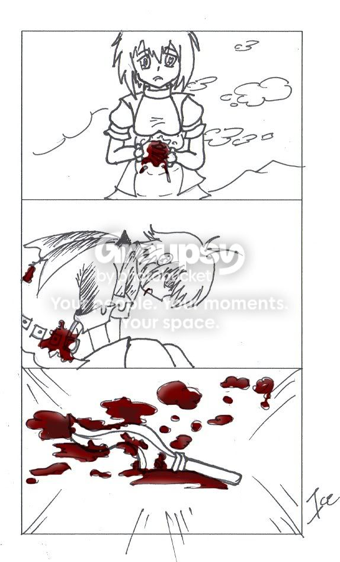

เรื่องราวของ ECO ในส่วนหลักนั้นคือการผจญภัยของเหล่า NPC ทั้ง 6 ซึ่งได้แก่ Emi Masha Tita Titus Berial Ruruie

ข้อมูลที่เหลืออ่านเอาที่
http://board.onenet.co.th/viewtopic.php?t=46408
ความเดิมก็ยังคงเหมือนเช่นเดียวกับภาคแรก (ตามลิงค์)
ตอนจบของ ECO แบบที่ 2 [Bad Ending2]
Emil ได้ช่วยชีวิต Tita ไว้ จนตัวเองต้องตาย Tita นั้นรัก Emil มากจึงใช้เวทมนต์ชุบชีวิต Emil ขึ้นมา ทว่าไม่มีเวทมนต์ใดที่จะชุบคนตายให้สำเร็จได้อย่างสมบูรณ์แบบ Emil ที่ฟื้นขึ้นจากความตายจึงต้องสูญเสียความทรงจำก่อนหน้านั้น และ Tita นั้นต้องสละพลังชีวิตของตนในการใช้เวทมนต์ครั้งนี้..จนในที่สุดดวงจิตของเธอจึงต้องแตกสลายไป....
ส่วนทางด้าน Emil หลังจากที่สูญเสียความทรงจำไปก็ได้ไปอาศัยอยู่กับ Masha ซึ่งเป็นเพื่อนสมัยเด็กของเขาและ Masha เองก็ได้คอยดูแลและช่วยเหลือเขาทุกอย่างจนกระทั่งเกิดความผูกพันทางจิตใจระหว่างเธอกับเขาโดยไม่รู้ตัว จนในที่สุด Masha จึงได้ลงเอยกับ Emil ....
ต่อมา.......
Titus พี่ชายของ Tita ก็สามารถรักษา Tita ได้และทำให้เธอกลับมามีชีวิตจิตใจแบบเดิมได้อีกครั้งแถมยังช่วยให้เธอสามารถกลับไปบนโลกของ Emil ได้แล้ว ตอนนั้นเองที่เธอตัดสินใจจะกลับไปหา Emil เพื่อที่จะสารภาพรักกับเขาให้ชัดเจน .... เธอกล่าวความในใจของ Emil ได้สำเร็จ ในช่วงนั้นเองที่ความทรงจำของเขากลับคืนมา...และเขาเลือกที่จะกลับมาคืนดีกับ Tita แต่เขาเองก็ไม่สามารถที่จะทิ้ง Masha ไปได้เหมือนกัน เพราะเธอเองก็เป็นผู้ที่มีพระคุณต่อเขามาก.......ด้วยเหตุนี้การใช้ชีวิตแบบสองหญิงหนึ่งชายจึงเริ่มขึ้น
ตอนแรกพวกเขาทั้งสามก็ยังเข้ากันได้ดี แต่ดูเหมือนว่า ความสัมพันธ์ระหว่าง Emil กับ Masha จะเริ่มห่างเหินไปเรื่อยๆ แต่ Emil ก็ยังไม่คิดที่จะบอกเลิกหรือละทิ้งใครสักคนอย่างแน่ชัดทำให้ทั้งสองสาวนั้นยังรู้สึกน้อยใจอยู่บ้างโดยเฉพาะ Masha
จนในที่สุด...Masha....ก็....
ในตอนนั้น Emil ควรจะหันไปเอาใจใส่ Masha ให้มากขึ้นเพราะเธอไม่ได้อยู่ตัวคนเดียวอีกแล้ว แต่ว่าด้วยความคิดที่จะทำตัวเป็นกลาง(บวกกับความซื่อ)เลยทำให้เขาต้องดูแลทั้งสองสาวอย่างเท่าเทียมกันเหมือนเดิม ... Masha อดทนไม่ไหวแล้ว....เธอทนยอมรับกับความรู้สึกแบบนี้ไม่ไหวอีกต่อไปแล้ว
Masha ได้นัดเจอกับ Emil ที่ตามลำพังสองต่อสองที่ริมชายหาดอะโครเนียตอนเย็น

เธอเดินเข้าไปหา Emil จากนั้นจึงตัดสินใจ...
ฉึก!!!!!!!!!!!!!

''ขอโทษ''
จากนั้นเธอจึงกระชากมีดเล่มนั้นออกมาอย่างแรง Emil ล้มตัวลงกับพื้น....

ทุกอย่างมันจบแล้ว.....
Ending...
======================================================================


Credit...
~Zabertus~
Aofkung
Kaku
Husky_Wisky
NewLegend
Icecicin